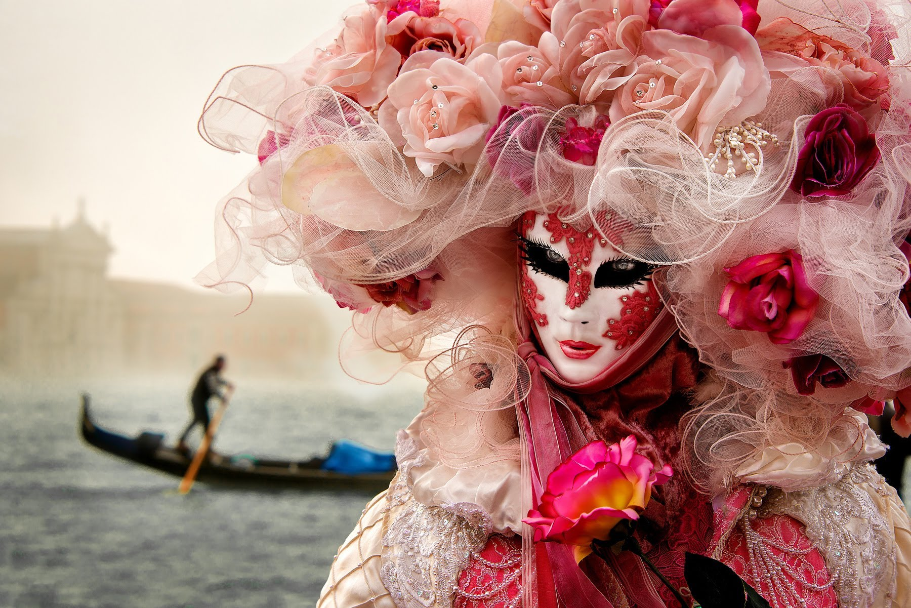
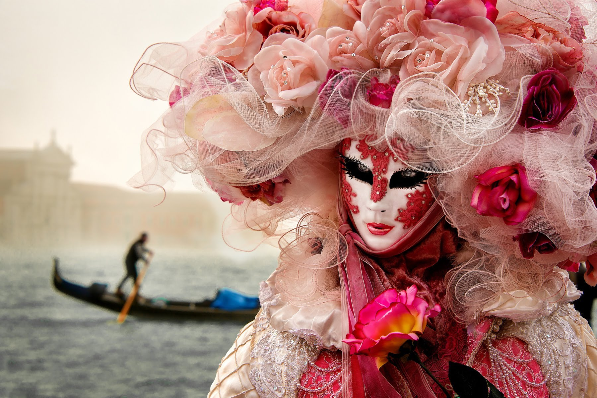

ИСТОРИЯ
Карнавал в Венеции впервые упоминается в 1094 году. В 1162 году на площади Сан-Марко начались народные гуляния в честь победы над патриархом Аквилеи. С тех пор карнавал стал ежегодным. Маски стали популярными в период с августа до Великого поста. В 1703 году Совет десяти запретил маски из-за увеличения притонов, но решение было отменено на следующий год. В 1797 году Австрия запретила карнавалы после падения республики и французской оккупации. В XIX веке были попытки возродить традицию, но они не привели к успеху. В 1979 году итальянское правительство возобновило карнавалы для популяризации истории и культуры Венеции. Каждый год на карнавал съезжается более полумиллиона туристов.
МАСКИ
Венецианская маска — традиционный символ ежегодного венецианского карнавала. Венецианские маски делаются из кожи или папье-маше. Самые первые маски были довольно простыми по дизайну и использовались не для сокрытия лица, а для создания дистанции и возможности контактировать социально не равным. Современные маски раскрашивают от руки, с использованием грунта и сусального золота. Их украшают птичьими перьями и драгоценными камнями. Одним из важнейших событий карнавала является конкурс на лучшую маску.
КАРНАВАЛ В НАШИ ДНИ
Каждый год свыше полумиллиона туристов приезжают в Венецию на карнавальные мероприятия — в том числе и для участия в них. Карнавал открывается старейшим венецианским праздником — Festa delle Marie, который посвящен освобождению венецианских девушек, похищенных пиратами из Истрии. В 1996 году венецианский карнавал получил собственный гимн, который написал известный кутюрье Пьер Карден. В последние годы в постановочных проектах венецианского карнавала принимает участие российский художник Михаил Шемякин.
ГАЛЕРЕЯ

 
